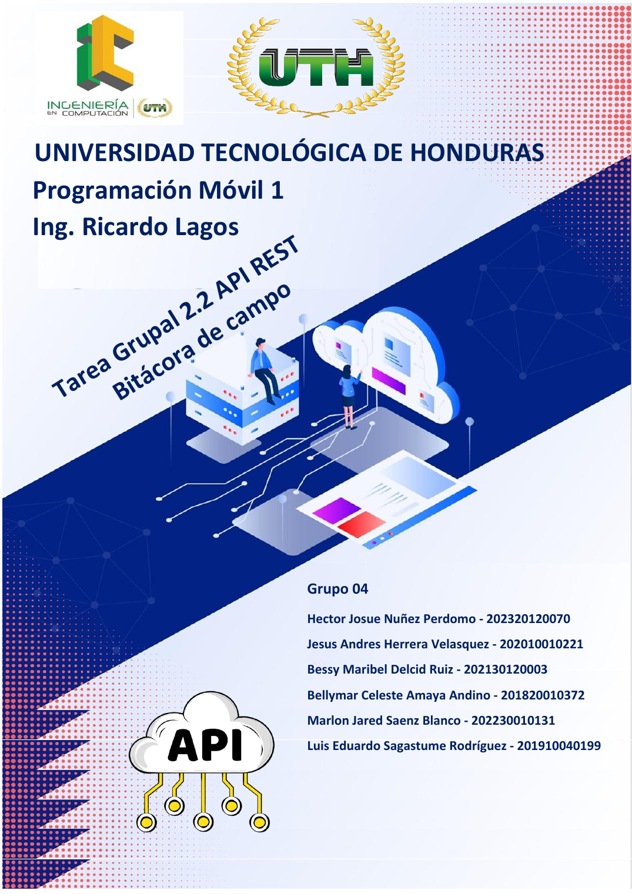
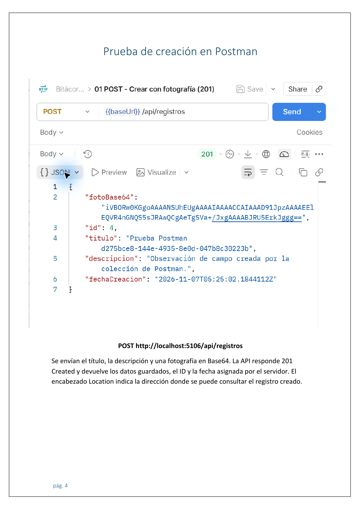
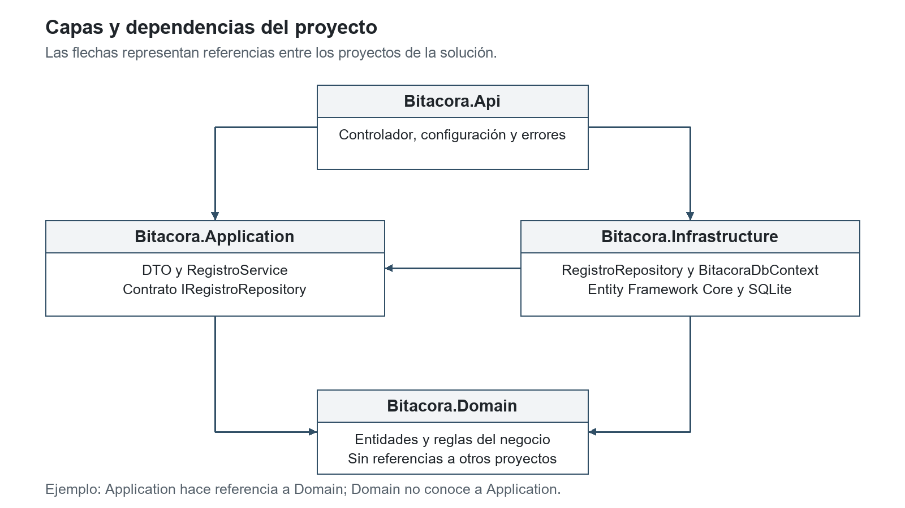
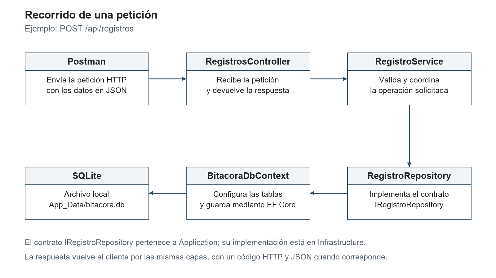
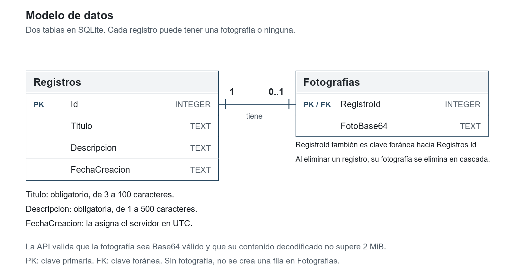
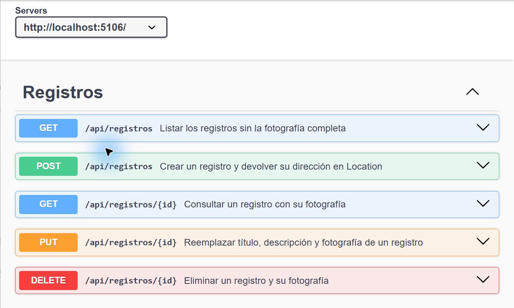
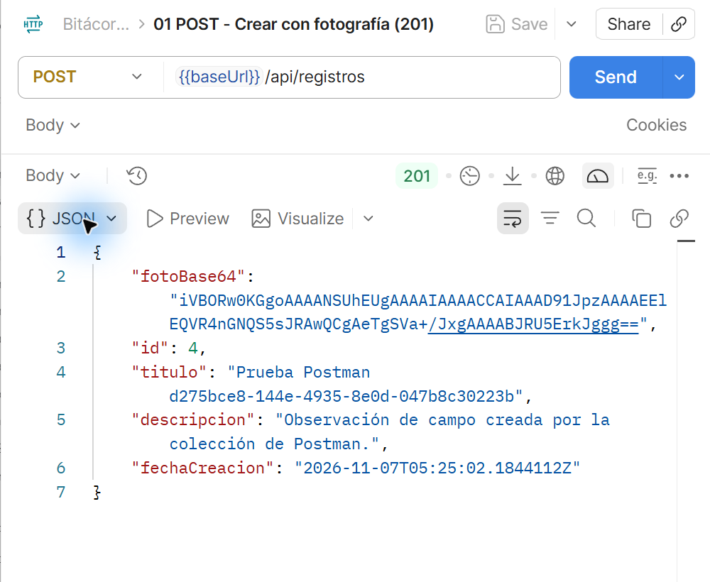
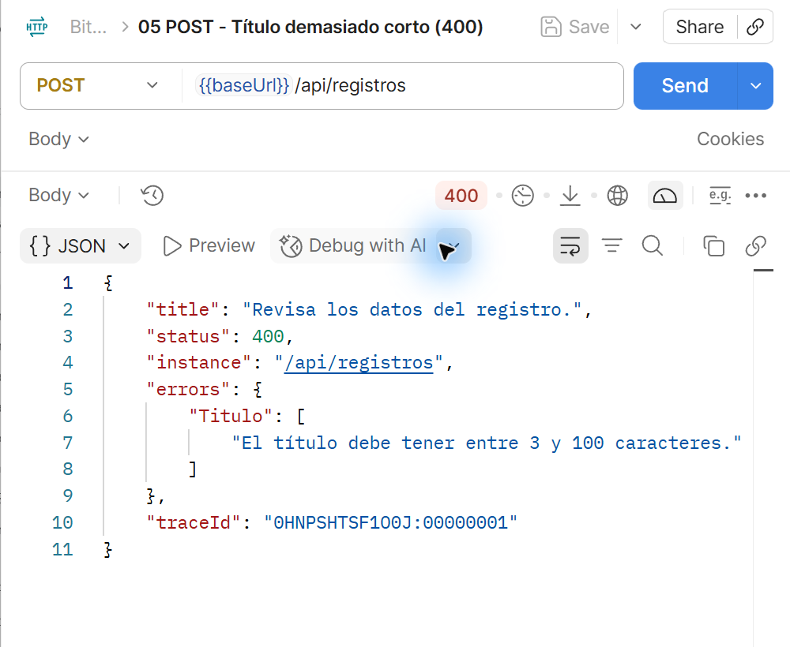
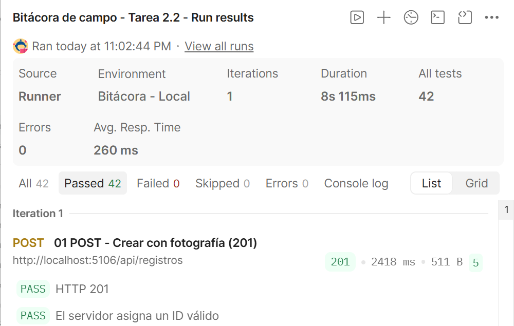

Informe actualizado
Abrir el PDF actualizado · Descargar el paquete actualizado
Portada y ejemplo de una prueba


Bitácora de campo - Tarea 2.2
API REST en C# y ASP.NET Core para crear, listar, consultar, actualizar y eliminar registros de campo. Cada registro tiene un título, una descripción, una fotografía opcional en Base64 y una fecha de creación. Los datos se guardan en SQLite mediante Entity Framework Core.
Las pruebas de esta entrega se realizan en local con Swagger y Postman. La aplicación Android corresponde a la tarea 2.3 y será un cliente de esta API.
Cómo ejecutar el proyecto
Se necesita .NET SDK 10 y conexión a Internet para descargar las dependencias la primera vez. Postman se utiliza para repetir las pruebas. SQLite funciona con un archivo local; no hace falta instalar un servidor de bases de datos.
Abre CMD en la carpeta que contiene Bitacora.sln y sigue estos pasos:
- Descarga las bibliotecas del proyecto:
- Restaura la herramienta de Entity Framework incluida en
dotnet-tools.json: - Crea o actualiza la base de datos con las migraciones incluidas:
- Enciende la API con el perfil de desarrollo local:
dotnet restore Bitacora.slndotnet tool restoredotnet ef database update --project src\Bitacora.Infrastructure --startup-project src\Bitacora.Apidotnet run --project src\Bitacora.Api --launch-profile httpMantén esa ventana abierta mientras haces las pruebas. Para detener la API, presiona Ctrl+C.
| Recurso | Dirección o ubicación |
|---|---|
| API | http://localhost:5106/api/registros |
| Swagger UI | http://localhost:5106/swagger |
| OpenAPI | http://localhost:5106/openapi/v1.json |
| Base SQLite | src/Bitacora.Api/App_Data/bitacora.db |
Swagger y OpenAPI están habilitados en el entorno de desarrollo. Cada compañero puede crear su propia base ejecutando las migraciones; no necesita recibir un archivo .db.
Organización
| Proyecto | Contenido | Depende de |
|---|---|---|
Bitacora.Domain | Entidades y reglas del registro. | Ningún otro proyecto. |
Bitacora.Application | DTO, RegistroService e IRegistroRepository. | Domain. |
Bitacora.Infrastructure | Repositorio, EF Core, SQLite y migraciones. | Application y Domain. |
Bitacora.Api | Controlador, configuración y manejo de errores. | Application e Infrastructure. |
El recorrido de una petición es: Postman → controlador → servicio → repositorio → EF Core → SQLite. La API devuelve DTO y mantiene separadas las entidades de persistencia.
Endpoints
| Método | Ruta | Respuesta correcta | Casos de error |
|---|---|---|---|
| GET | /api/registros | 200, lista sin la fotografía. | 406 al solicitar XML. |
| GET | /api/registros/{id} | 200, detalle con fotografía. | 404 si no existe. |
| POST | /api/registros | 201 y encabezado Location. | 400 por datos inválidos. |
| PUT | /api/registros/{id} | 204, sin cuerpo. | 400 o 404. |
| DELETE | /api/registros/{id} | 204, sin cuerpo. | 404 si no existe. |
POST y PUT reciben JSON. Ejemplo:
{
"titulo": "Observación del río",
"descripcion": "El agua estaba turbia después de la lluvia.",
"fotoBase64": null
}- El título es obligatorio y debe tener entre 3 y 100 caracteres.
- La descripción es obligatoria y admite hasta 500 caracteres.
- La fotografía es opcional. Cuando se envía, debe ser Base64 válido, sin prefijo
data:image/..., y no superar 2 MiB decodificados (2 097 152 bytes). - El servidor asigna el ID y la fecha en UTC. La fecha se conserva al editar.
- Un PUT reemplaza los datos del registro;
fotoBase64: nullretira la fotografía.
La base tiene las tablas Registros y Fotografias, relacionadas de uno a cero o una fotografía. Al borrar un registro se elimina también su foto. Los errores de validación devuelven 400 con mensajes por campo. El manejador global devuelve 500 con ProblemDetails, sin mostrar el detalle interno de la excepción.
Pruebas en Postman
- Enciende la API.
- Importa la colección y el entorno local.
- Selecciona Bitácora - Local y comprueba que
baseUrlseahttp://localhost:5106. - Abre Run collection y ejecuta las 16 solicitudes en orden, con una iteración, desde el POST inicial.
La colección incluye 42 comprobaciones de casos correctos y errores esperados. Crea un registro, consulta y modifica sus datos, lo elimina y comprueba que ya no existe. También revisa datos inválidos, el encabezado Location, la fecha y la omisión de la foto en el listado. Si se interrumpe antes del DELETE, puede quedar el registro de prueba.
En POST y PUT se usa Content-Type: application/json. El encabezado Accept es application/json, salvo la prueba que solicita XML para comprobar el error 406.
Documentación
- Vista previa del README, el informe y todas las imágenes.
- Informe PDF del Grupo 04.
- Informe editable y responsabilidades del equipo.
- Resultados de Postman.
- Diagrama de capas y dependencias.
- Flujo de una petición.
- Modelo de datos.


Grupo 04
Para la revisión y el cierre del proyecto, el trabajo se distribuye así:
| Integrante | Número de cuenta | Revisión asignada |
|---|---|---|
| Hector Josue Nuñez Perdomo | 202320120070 | Entidades y validaciones del dominio. |
| Jesus Andres Herrera Velasquez | 202010010221 | DTO, servicio y casos de uso de Application. |
| Bessy Maribel Delcid Ruiz | 202130120003 | EF Core, SQLite y migraciones. |
| Bellymar Celeste Amaya Andino | 201820010372 | Controlador, respuestas HTTP, errores y Swagger. |
| Marlon Jared Saenz Blanco | 202230010131 | Colección de Postman, encabezados y resultados. |
| Luis Eduardo Sagastume Rodríguez | 201910040199 | Informe, diagramas y guía de ejecución. |
Cada integrante revisará la parte asignada y registrará sus cambios en GitHub antes de la entrega.
El repositorio de GitHub se publicará al final. Debe incluir el código, las migraciones y esta documentación, con aportes reales de los integrantes. El archivo .gitignore excluye los resultados de compilación y las bases de datos locales.
Informe PDF
Incluye portada institucional, arquitectura, capturas de Swagger y Postman, resultados y responsabilidades de revisión del equipo.
Abrir el informe completo · Informe editable · Resultados de las pruebas
Mostrar el PDF aquí
Diagramas y capturas
Los diagramas también están disponibles en SVG editable. Las capturas originales se guardaron en PNG.
Capas y dependencias
Referencias entre los cuatro proyectos de la solución. Abrir imagen original · Abrir SVG editable


Recorrido de una petición
Ejemplo de creación desde Postman hasta SQLite. Abrir imagen original · Abrir SVG editable


Modelo de datos
Tablas Registros y Fotografias, con una fotografía opcional por registro. Abrir imagen original · Abrir SVG editable


Swagger UI
Las cinco operaciones disponibles en la API local. Abrir imagen original


Creación correcta
POST con fotografía: respuesta 201 Created y cinco comprobaciones aprobadas. Abrir imagen original


Error de validación
El título de dos caracteres se rechaza con 400 y un mensaje del campo Titulo. Abrir imagen original


Ejecución completa en Postman
42 comprobaciones aprobadas, cero fallos y cero errores. Abrir imagen original

